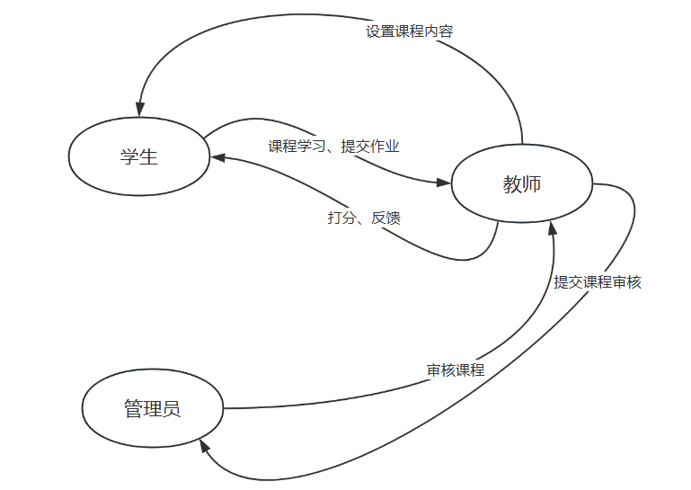
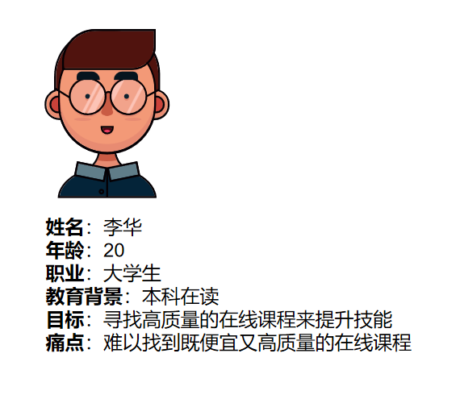
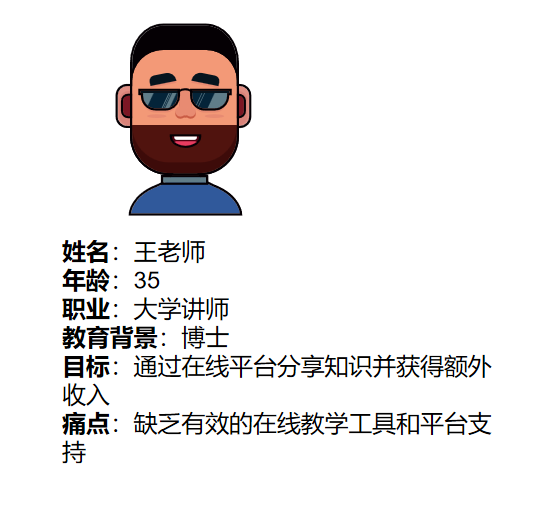
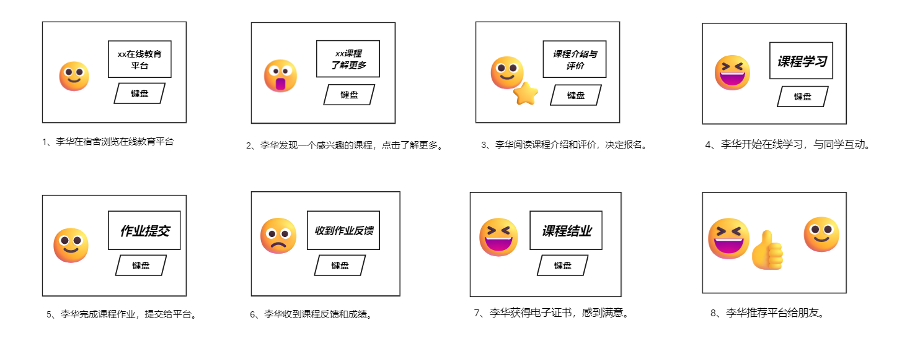
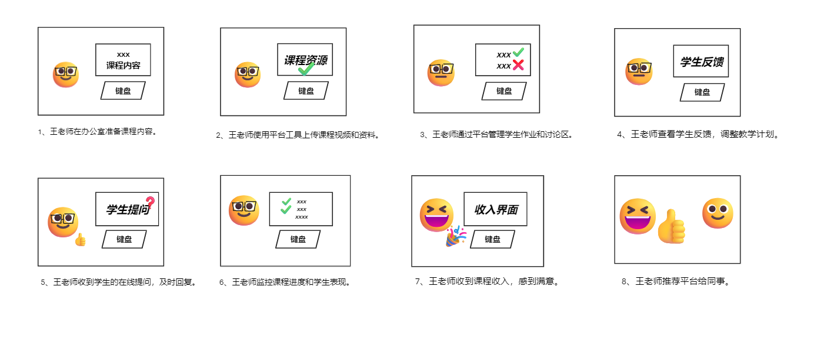

team_name: RookieTeam
Flow Model
在线教育平台的流程模型可以展示学生如何注册、浏览课程、参加课程和获得证书的过程，以及教师如何上传课程、管理学生和获得收入的过程。

2. “如何做”（HMW）问题
- HMW1：我们如何让新用户快速了解并注册我们的在线教育平台？
- HMW2：我们如何确保课程内容的质量和更新？
- HMW3：我们如何提高学生的参与度和完成课程的动力？
- HMW4：我们如何帮助教师有效地管理他们的课程和学生？
- HMW5：我们如何确保平台的安全性和数据隐私？
- HMW6：我们如何为教师提供足够的激励，让他们持续提供优质内容？
3. 人物角色（Personas）
人物角色1：学生（李华）

人物角色2：教师（王老师）

4. 故事板（Storyboards）
故事板1：学生体验

故事板2：教师体验

5. 重访并修订问题陈述，添加解决方案提案
问题陈述：
在线教育平台面临着如何吸引和保留学生，以及如何为教师提供有效工具和支持的挑战。
解决方案提案：
我们提议开发一个集成了社交功能、个性化学习路径和教师支持工具的在线教育平台。该平台将通过数据分析来优化课程推荐，提高学生参与度，并通过提供高质量的教学资源和工具来吸引和保留教师。